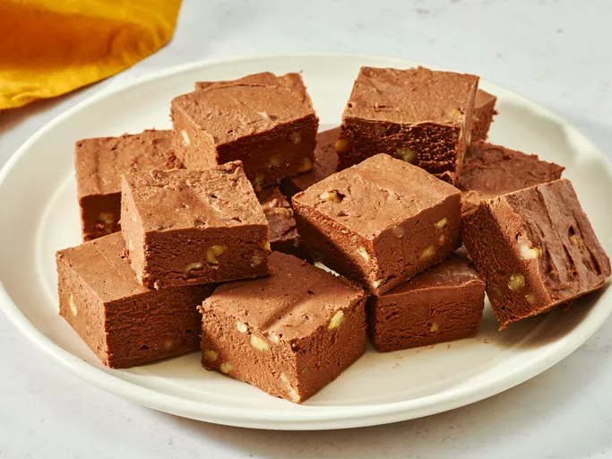

Home
Chocolate Fudge

Description
Chocolate fudge is a rich and indulgent confectionery treat that is beloved by chocolate enthusiasts around
the world. It is typically made from a combination of sugar, butter, milk, and cocoa powder, which are
cooked together to create a smooth and creamy texture. The mixture is then poured into a pan and allowed to
cool and set before being cut into bite-sized pieces. Chocolate fudge can be enjoyed on its own or used as a
delicious topping for desserts like ice cream or cakes. Its decadent flavor and velvety consistency make it
a popular choice for satisfying sweet cravings.
Ingredients
- 1 ½ cups white sugar
- 1 (7 ounce) jar marshmallow creme
- 2/3 cup evaporated milk
- 1/4 cup butter
- 1/4 teaspoon salt
- 2 cups milk chocolate chips
- 1 cup semisweet chocolate chips
- 1/2 cup chopped nuts
Steps
- Gather all ingredients. Line an 8-inch square pan with aluminum foil; set aside.
- Combine sugar, marshmallow cream, evaporated milk, butter, and salt together in a large saucepan over medium heat; bring to a full boil and cook for 5 minutes, stirring constantly.
- Remove from heat and add milk chocolate chips and semisweet chocolate chips; stir until chocolate is melted and mixture is smooth. Stir in nuts and vanilla.
- Pour into prepared pan; chill in refrigerator for 2 hours, or until firm.